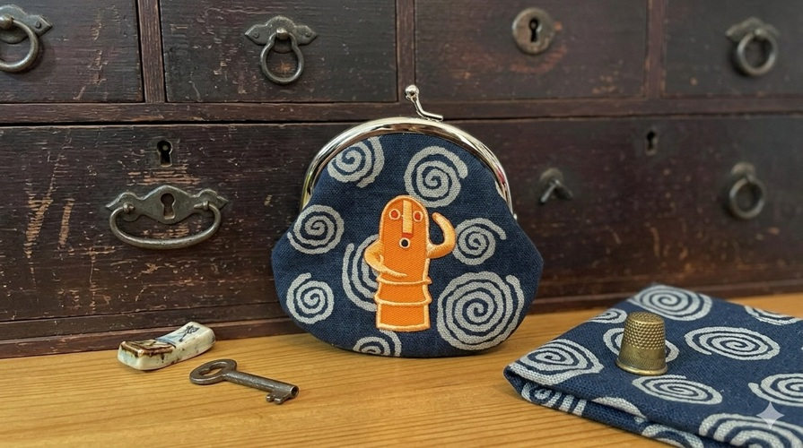

宮島へようこそ - Miyajima Handmade

宮島へようこそ
広島に暮らす作家たちが、
一つひとつ丁寧に作った作品です。
ここでしか出会えない特別な一点を、旅の思い出に。

宮島へようこそ
広島に暮らす作家たちが、
一つひとつ丁寧に作った作品です。
ここでしか出会えない特別な一点を、旅の思い出に。
アクセサリーや雑貨などの作品を写真付きで紹介する。作品の特徴やおすすめポイントも掲載します。
宮島での出店場所や販売予定日、イベント情報などを掲載します。
使用している材料や制作風景、作品づくりへの思いを紹介します。